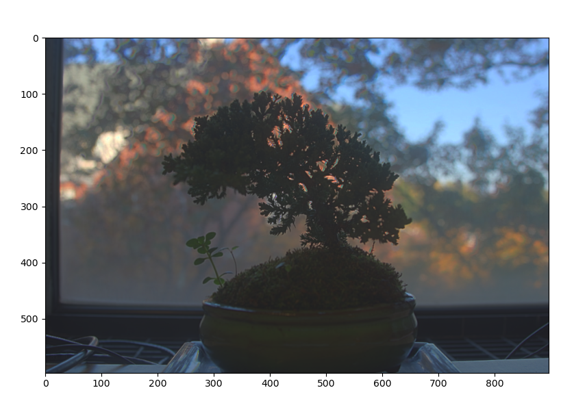

In this subproject we investigate data postprocessing for lightfield camera. A lightfield camera differs from a normal camera in that, in addition to intensity at each pixel, it also captures direction.
Each physical pixel consists of a grid of subpixels which each measure the light hitting its parent pixel in a specific direction. One can obtain an image equivalent to that of a traditional camera by summing all the subpixels for each pixel. In practice, one can construct a light field camera by introducing a microlens array in front of the image sensor. The microlens array focuses light from each direction onto the corresponding subpixel.
A similar effect can be accomplished by taking multiple images over a regular grid (explained in this paper from Ng et al.). This method was used to produce the images for Stanford Light Field Archive, which are used in this project.
When both direction, position, and intensity are captured, we can do a variety of interesting post processing such as refocusing and aperture adjustment.
One interesting thing that light field measurement allow us to do is to perform refocusing after having already taken an image.
To explain how we can implement refocusing we first need to undestand the form of the data in our dataset. Each image consists of many images taken over a regularly spaced grid orthogonal to the optical axis. Each image has everything in focus. This is important to note because, with everything in focus, pixel position gives us the angle of oncoming light. Our set of images thus ultimately gives us intensity and angle for a set of positions in our sampling grid. We have high angular resolution, and low positional resolution.
By summing all images sampled over a grid, we can derive a composite image where the far away objects are in focus, but the nearby ones are out of focus. This is because, as you shift the position of a camera, the far away objects shift less than the nearby ones. Geometrically, one can imagine that rays from far away objects aproach parallel to eachother and the optical axis, allowing them to be in focus.
The sum of all images over a grid for a few sets of images are shown below:

If we perform a set of shifts to our set of images before summing them, we can move the focus plane from infinitely far out to an arbitrary plane. There is a linear relation between shift required for each image and the position of each image on the sampling grid. That is, images taken further from the grid center require more of a shift to correct focus.
We therefore implement refocusing by introducing a parameter and applying a linear
shift on each image equal to the product of
and sampling
position. The set of shifted images is then summed.
We show the results of shifting the focus plane:


By performing refocusing using only a subset of images sampled from the grid orthogonal to the optical axis, we can simulate a smaller aperture and thus achieve a greater depth of field.
To see why this works, we can imagine the sampling grid as the plane of our aperture. When we consider all images, we are considering all rays of light bounded by the sampling grid. When we consider only the images near the center, we only consider rays that are near the center of the sampling grid, which is equivalent to having a smaller aperture.
Sweeping synthetic aperture size we get the following results:


Light fields and light field cameras are a subject that we explored in multiple lectures and readings in Dr. Laura Waller’s class in Computational Imaging this semester, so it was a topic I was already familiar with. However, through this project, I learned about how light field data cam be practically captured without a light field specific camera just by taking images on a grid. I also gained a sense of how to work with lightfield data from such gridwise data. Ultimately, I found the hands on experience and the opportunity to think about light fields from a different angle to be very useful.
In the real world light occupies a large range of intensities, oftentimes even in the same physical location. For this reason, humans have evolved to be able to perceive a large dynamic range of light with their eyes. Oftentimes the dynamic range present in the physical world is a contibuting factor to its beauty. With photography we often want to capture the beauty of the real world or even just some representation of truth. However, modern cameras can only capture a narrow range of dynamic range. When a scene has both bright and low areas, you ultimately lose detail in either the bright or dim sections. However, by capturing a set of short and long exposures, we can combine the results to capture the full dynamic range and beauty of the real world.
For this project we therefore investigate how we can create such composite images.
When a camera captures an image, it maps radiance and exposure time
to a pixel value through the function where
is observed pixel
value at pixel i and image j,
is radiance at pixel i, and
is exposure time for image j. To
solve for radiance, we solve for the log response function
. Solving for g is easier because it is the sum of
log radiance and log exposure time instead of being a product, allowing
us to find g by solving a system of linear equations.
To find g, we apply least squares to solve the following equation:
w is the weighting function, which takes the form of a triangle with the peak at the average between min and max pixel values. We include w because our measurements are more trustworthy for pixel values closer to the middle of our range.
We also simultaneously minimize the second derivative of g to enforce
smoothness. Since g is discrete, we can approximate the second
derivative as .
We derive the following results on data from the provided dataset:
Radiance plot of a bonsai tree:
Corresponsing response curves:

Radiance plot of house:
Corresponsing response curves:
Having a radiance map is only the first step in producing an HDR image. While we now have a relatively accurate representation of radiance, we need to map these values back onto the range between 0 and 255 in order to display them. We cannot use a direct linear mapping because we would lose detail. We therefore use the following algorithm based on Durand 2002:
The bilateral filter applies blur while retaining edges. This allows us to compute offset and scaling without considering detail before reintroducing the detail we lost.
This technique yields the following images:

It is also possible through global strategies such as taking the square root or log of intensity. Below, we compare an image from the dataset to our composite hdr image with complex and simple tone mapping:
We can see that all HDR images allow us to see a greater dynamic range than the any one of the original images, and the more complex tone mapping strategy produces the best appearing results. While the other mappings look dark in areas or unnatural, the local method of tone mapping described above creates a natural, well balanced look.
Finally, I applied the same pipeline to images that I took. I used an iPhone app with an adjustable shutter, and fixed the phone in place. Here are the results:
This result looks natural, while capturing detail in the dark and light region of the image.
This result also looks natural and captures detail in all regions, but there is some speckling. One main difference in how this image was produced was that my “tripod” was less secure, and I only include four images over a very large dynamic range. I would expect that this problem could be alleviated by fixing these two issues.
I include comparisons to other tone mapping methods below:
Like in the other section, the local tone mapping performs the best.
Also, to explore tone mapping a bit further, I plotted the high frequency and low frequency components separated when doing tone mapping:
The bilateral filter isolates the low frequency components whil maintaining the edges. This also has the effect of not attenuating the bright regions near edges with dark regions which is important when computing tone mapping. If we instead used a gaussian filter, the some bright areas may not correctly fall in the target range in the output image.